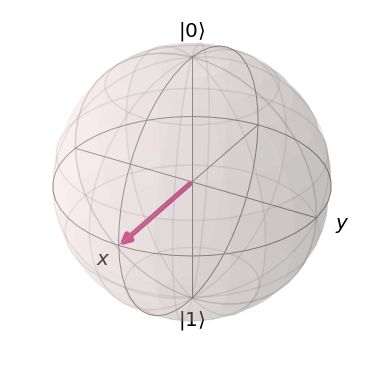
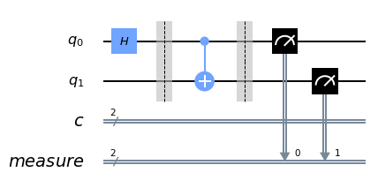

The Bloch Sphere
The Bloch sphere is perhaps the most intuitive way in which to understand basic single qubit gates, as we can interpret them as rotations between different states. In this short blog, we will use it to build an intuition for the single qubit gates x, y, z, h, s, rx, ry, rz, and how statevectors and bases works.

x#We first import numpy and matplotlib as they have useful functions.import numpy as npfrom math import piimport matplotlib.pyplot as plt%matplotlib inline
#When then import everything from qiskit, and more specifically the#function for plotting a statevector in a bloch sphere.import qiskit as qkfrom qiskit.visualization import plot_bloch_vector# make the imports that are necessary for our workfrom qiskit import ClassicalRegister, QuantumRegister, QuantumCircuitfrom qiskit import execute, Aerfrom qiskit import IBMQfrom qiskit.visualization import plot_histogram
# We import the qasm_simulator which simulates the noise one would# see while using NISQ devices.backend = Aer.get_backend('qasm_simulator')The shots variable determines the amount of samples we use to negate some of the random noise that is simulated. Setting this lower may lead to more prevalent noise, while higher values will require more computing time.
xxxxxxxxxxshots = 10000 #Try to set me to 1, 10, 100, 1000, 10 000 and run the circuit below!The three variables below define three different basis. For now, we will leave them as they are and return to them a bit later in this notebook.
xxxxxxxxxx# Z measurement of qubit 0measure_z = QuantumCircuit(1,1)measure_z.measure(0,0)
# X measurement of qubit 0measure_x = QuantumCircuit(1,1)measure_x.h(0)measure_x.measure(0,0)
# Y measurement of qubit 0measure_y = QuantumCircuit(1,1)measure_y.sdg(0)measure_y.h(0)measure_y.measure(0,0);With our bases in place, we can now define our function for simulating a circuit and returning a statevector.
xxxxxxxxxx# Our function takes the single qubit quantum circuit 'qc'def simulate_circuit(qc): bloch_vector = [] #We create a list to store the information for each basis. for measure_circuit in [measure_x, measure_y, measure_z]: #We measure for each basis
# Run the circuit with a the selected measurement and get the number of samples that output each bit value # We execute our circuit, add the transformation into the basis we care about (measure_circuit), # use the QASM backeck, and sample equal to the amount of 'shots'. counts = execute(qc+measure_circuit, backend,shots=shots).result().get_counts() # We then calculate the probabilities for each bit value probs = {} for output in ['0','1']: if output in counts: probs[output] = counts[output]/shots else: probs[output] = 0 bloch_vector.append( probs['0'] - probs['1'] ) #We then return the bloch vector containing probabilities for each basis. return bloch_vectorYou don't need to be able to replicate the code above, but know that it samples measurements from each basis by running the circuit several times (to get reliable results, upwards of 1000 to 10000 shots are not uncommon).
Now it is time to feed the function some circuits and see how the gates transforms the statevector of the qubit!
First, here are some gates to play around with:
| Method | Description |
|---|---|
| .x(0) | Flips state around x-axis |
| .y(0) | Flips state around y-axis |
| .z(0) | Flips state around z-axis |
| .h(0) | Switches z and x values by flipping around axis between |
| .s(0) | Switches x and y values |
| .rx( | Rotate |
| .ry( | Rotate |
| .rz( | Rotate |
Note that the 0's just specifies which qubit to apply the gate to. This will be useful for later multiqubit circuits!
xxxxxxxxxx# We create a quantum circuit with just 1 qubit.qc = QuantumCircuit(1)
# PUT GATES YOU WISH TO APPLY HERE!#qc.h(0)qc.ry(pi/2,0)# We send the circuit to our simulatorresult = simulate_circuit(qc)
# And plot the resulting statevector on a bloch sphereplot_bloch_vector(result)

Task 1: Apply each gate individually and see what it does. (Hint: If nothing happens, the gate rotates around an axis with which you are currently parallel to. Use another gate to no longer be parallel.)
Question 1: Is .ry(pi/2, 0) equivalent to the Hadamard gate,.h(0)? Why, why not?
Question 2: Does the order of the gates matter to the final position of the statevector?
Question 3: Identify the axis around which the phase gate, .s(0), rotates.
Challenge 1: Construct a circuit that ends at negative x (opposite of where a single Hadamard would leave you).
Challenge 2: Construct a circuit which goes through all the poles of the x, y, and z, axes.
Challenge 3: Construct a circuit that gives equal probability of measuring 0 and 1, and x and -x if you measured a single time.
Challenge 4: Construct a circuit which gives 75% chance of measuring 1 and 25% of measuring 0 in the z basis.
Choosing a Basis
Remember how we skipped over how we measure the different bases? Let's look at it again.
Unless otherwise specified, qubits are always initialized to
Challenge: Can you figure out how the bases that we've copied from above gives us information about the x and y components?
Hint: See them as quantum circuits, and send them to our simulator.
xxxxxxxxxx# Z measurement of qubit 0measure_z = QuantumCircuit(1,1)measure_z.measure(0,0);
# X measurement of qubit 0measure_x = QuantumCircuit(1,1)measure_x.h(0)measure_x.measure(0,0)
# Y measurement of qubit 0measure_y = QuantumCircuit(1,1)measure_y.sdg(0)measure_y.h(0)measure_y.measure(0,0);Final notes about bases: Unlike normal bits that can be either 0 or 1, the different superpositions between amplitude and phase that are intrinsic to qubits leaves us with a lot of freedom when it comes to measuring their value. While we've only mentioned the x, y, and z basis, one could imagine an infinite amount of axes within the sphere, all of which are valid bases. However, as the quantum state of qubits collaps once we measure them, we must choose our basis with care, since we only get one measurement for every time we run the circuit. That is why we set shots to such a large number above, so that we can average over many measurements, and the reason we ran a for-loop which meant we ran these many repetition for each basis. This is what allowed us to obtain all components of our statevector above.
Entanglement
Quantum entanglement is a physical phenomenon that occurs when pairs or groups of particles are generated or interact in ways such that the quantum state of each particle cannot be described independently instead, a quantum state must be described for the system as a whole. This means for an entangled system, the quantum state of composite system cannot be factored as a product of states of its local constituents.
Therefore, it can only be expressed as a sum, or superposition, of products of states of local constituents with more than one term, i.e., a state
Preparing Entangled States
We will try to prepare some of the most important (and popular) entangled quantum states, and also the their applications:
- Bell states
- Greenberger-Horne-Zeilinger state i.e. (GHZ state)
- W state
Bell States
The Bell states (or EPR states) are specific quantum states of two qubits that represent the simplest (and maximal) examples of quantum entanglement.
Preparing Bell States
In quantum circuit language, the way to create a Bell pair between two qubits is to first transfer one of them to the Bell basis (
Implementation
xxxxxxxxxxqc = QuantumCircuit(2, 2)qc.h(0) #rotates Z to X and vice-versaqc.barrier()qc.cx(0, 1) qc.measure_all() #performs measurement on all qubitsqc.draw(output='mpl')

xxxxxxxxxxbackend = Aer.get_backend('qasm_simulator')job_sim = execute(qc, backend, shots=1024)sim_result = job_sim.result()
measurement_result = sim_result.get_counts(qc)print(measurement_result)plot_histogram(measurement_result)xxxxxxxxxx{'00 00': 512, '11 00': 512}

xxxxxxxxxxqc = QuantumCircuit(2, 2)qc.x(1) #Flipping the initial state of the qubitqc.barrier()qc.h(0)qc.barrier()qc.cx(0, 1)qc.measure_all()qc.draw(output='mpl')

xxxxxxxxxxbackend = Aer.get_backend('qasm_simulator')job_sim = execute(qc, backend, shots=1024)sim_result = job_sim.result()
measurement_result = sim_result.get_counts(qc)print(measurement_result)plot_histogram(measurement_result)xxxxxxxxxx{'01 00': 514, '10 00': 510}

Quantum Teleportation
The concept
Alice wants to send quantum information to Bob. Specifically, suppose she wants to send the state
There exists a theorem in quantum mechanics which states that you cannot simply make an exact copy of an unknown quantum state. This is known as the no-cloning theorem. As a result of this we can see that Alice can't simply generate a copy of
However, by taking advantage of two classical bits and entanglement, Alice can transfer the state
How does quantum teleportation work?
Step 1: Alice and Bob create an entangled pair of qubits and each one of them holds on to one of the two qubits in the pair. The pair they create is a special pair called a Bell pair that we have discussed above.
Let's say Alice owns
Step 2: Alice applies a CNOT gate on
Step 3: Next, Alice applies a Hadamard gate to
Step 4: Then, it's time for a phone call to Bob. She tells Bob the outcome of her two qubit measurement. Depending on what she says, Bob applies some gates to his qubit,
00
01
10
11
Note that this transfer of information is classical.
And voila! At the end of this protocol, Alice's qubit has now teleported to Bob.
Implementation
In this notebook, we will give Alice a secret state
xxxxxxxxxxsecret_unitary = 'hz'If the quantum teleportation circuit works, then at the output of the protocol discussed above will be the same state passed on to Alice. Then, we can undo the applied secret_unitary (by applying its conjugate transpose), to yield the
We will then do repeated measurements of Bob's qubit to see how many times it gives 0 and how many times it gives 1.
What do we expect?
In the ideal case, and assuming our teleportation protocol works, we will always measure 0 from Bob's qubit because we started off with
In a real quantum computer, errors in the gates will cause a small fraction of the results to be 1. We'll see how it looks.
1. Simulating the teleportation protocol
xxxxxxxxxx# simple function that applies a series of unitary gates from a given stringdef apply_secret_unitary(secret_unitary, qubit, quantum_circuit, dagger): functionmap = { 'x':quantum_circuit.x, 'y':quantum_circuit.y, 'z':quantum_circuit.z, 'h':quantum_circuit.h, 't':quantum_circuit.t, } if dagger: functionmap['t'] = quantum_circuit.tdg if dagger: [functionmap[unitary](qubit) for unitary in secret_unitary] else: [functionmap[unitary](qubit) for unitary in secret_unitary[::-1]]xxxxxxxxxx# Create the quantum circuit with 3 qubits and 3 classical bitsqc = QuantumCircuit(3, 3)
''' Qubit ordering as follows (classical registers will just contain measured values of the corresponding qubits):q[0]: qubit to be teleported (Alice's first qubit. It was given to her after the application of a secret unitary which she doesn't know)q[1]: Alice's second qubitq[2]: Bob's qubit, which will be the destination for the teleportation'''
# Apply the secret unitary that we are using to generate the state to teleport. You can change it to any unitaryapply_secret_unitary(secret_unitary, qc.qubits[0], qc, dagger = 0)qc.barrier()# Next, generate the entangled pair between Alice and Bob (Remember: Hadamard followed by CX generates a Bell pair)qc.h(1)qc.cx(1, 2)qc.barrier()# Next, apply the teleportation protocol. qc.cx(0, 1)qc.h(0)qc.measure(0, 0)qc.measure(1, 1)qc.cx(1, 2)qc.cz(0, 2)qc.barrier()
'''In principle, if the teleportation protocol worked, we have q[2] = secret_unitary|0>As a result, we should be able to recover q[2] = |0> by applying the reverse of secret_unitarysince for a unitary u, u^dagger u = I.'''apply_secret_unitary(secret_unitary, qc.qubits[2], qc, dagger=1)qc.measure(2, 2)
xxxxxxxxxx<qiskit.circuit.instructionset.InstructionSet at 0x7fb910870250>
It's always a good idea to draw the circuit that we have generated in code. Let's draw it below.
xxxxxxxxxxqc.draw(output='mpl')

xxxxxxxxxxbackend = Aer.get_backend('qasm_simulator')job_sim = execute(qc, backend, shots=1024)sim_result = job_sim.result()
measurement_result = sim_result.get_counts(qc)print(measurement_result)plot_histogram(measurement_result)xxxxxxxxxx{'010': 246, '001': 263, '011': 257, '000': 258}

Note that the results on the x-axis in the histogram above are ordered as
Greenberger-Horne-Zeilinger state i.e. (GHZ state)
The Greenberger-Horne-Zeilinger state is a certain type of entangled quantum state that involves at least three subsystems (qubits). For a
Simply put, it is a quantum superposition of all subsystems being in state
Here, we will try to prepare the simplest one, i.e. the 3-qubit GHZ state:
Preparing 3-qubit GHZ state
In quantum circuit language, the way to create a 3-qubit GHZ states is to first transfer the first qubit to the Hadamard basis (
Implementation
xxxxxxxxxxqc = QuantumCircuit(3, 3)qc.h(0)qc.barrier()qc.cx(0, 1)qc.barrier()qc.cx(1, 2)qc.measure_all()qc.draw(output='mpl')

xxxxxxxxxxbackend = Aer.get_backend('qasm_simulator')job_sim = execute(qc, backend, shots=1024)sim_result = job_sim.result()
measurement_result = sim_result.get_counts(qc)print(measurement_result)plot_histogram(measurement_result)xxxxxxxxxx{'111 000': 511, '000 000': 513}

[#1] Challenge
Devise an algorithm to prepare the following generalized
W state
The
Preparing W state
We saw that construction of both Bell states and GHZ state was quite straight forward. However, preparing
This can be implemented as a
Therefore, in our case for
Implementation
xxxxxxxxxxqc = QuantumCircuit(3, 3)# Custom Gate (G(1/3))qc.u3(2*np.arccos(np.sqrt(2/3)),0,0,0)qc.barrier()# Anti-Controlled Hadamamrdqc.x(0)qc.ch(0, 1)qc.x(0)qc.barrier()# Anti-Controlled toffoliqc.x(0)qc.x(1)qc.ccx(0, 1, 2)qc.x(1)qc.x(0)qc.measure_all()qc.draw(output='mpl')

xxxxxxxxxxbackend = Aer.get_backend('qasm_simulator')job_sim = execute(qc, backend, shots=2048)sim_result = job_sim.result()
measurement_result = sim_result.get_counts(qc)print(measurement_result)plot_histogram(measurement_result)xxxxxxxxxx{'100 000': 695, '010 000': 664, '001 000': 689}

[#2] Challenge
Devise an algorithm to prepare the following generalized
Entanglement Swapping
Entanglement Swapping is a technique to implement quantum correlation in a system. This is done via measurements on one particle of the each of the two pairs of entangled particles, leaving the unmeasured particles correlated. This messes up with the normal expectation of correlations as two particles who never had shared a common past now are correlated, and affect measurements per-formed on each other.
Description:
Alice has one particle, Bob two, and Carol one. Alice's particle and Bob's first particle are entangled, and so are Bob's second and Carol's particle. Now, if Bob does a projective measurement on his two particles in the Bell state basis and communicates the results to Carol, as per the teleportation scheme described above, the state of Bob's first particle can be teleported to Carol's. Although Alice and Carol never interacted with each other, their particles are now entangled.
Implementation
xxxxxxxxxxqc = QuantumCircuit(4, 4)# Prepare Entangled States (A-B and C-B)qc.h(0)qc.h(3)qc.cx(0, 1)qc.cx(3, 2)qc.barrier()# Measurement by Bobqc.cx(2, 1)qc.h(2)qc.barrier()qc.measure(1,1)qc.measure(2,2)qc.barrier()# Indicating Phase and Parityqc.cx(1, 0)qc.cz(2, 3)qc.barrier()# Final Measurement by Alice and Carolqc.measure(0,0)qc.measure(3,3)qc.draw(output='mpl')

xxxxxxxxxxbackend = Aer.get_backend('qasm_simulator')job_sim = execute(qc, backend, shots=4096*8)sim_result = job_sim.result()
measurement_result = sim_result.get_counts(qc)
traced_result = {'00':0, '11':0}for v, k in measurement_result.items(): res = 0 if v[0] == '0': res = traced_result['00'] + k traced_result.update({'00':res}) else: res = traced_result['11'] + k traced_result.update({'11':res})
print(traced_result)plot_histogram(traced_result)xxxxxxxxxx{'00': 16343, '11': 16425}

The really important thing to realize is that, after that Bell basis measurement, Alice and Carol could be in one of many possible entangled states. Their qubits might be entangled to agree along the
But then there's still Bob's measurement results. They reveal which entangled case Alice and Carol ended up in. Bob knows their state's X-parity and its Z-parity. All Bob has to do is tell Alice and Carol "Hey, the Z-parity came out 'disagree' so one of you flip your qubit 180 degrees around the X axis to fix that". Do the same for the X-parity, and the problem is solved: Alice and Carorl will definitely end up in the state